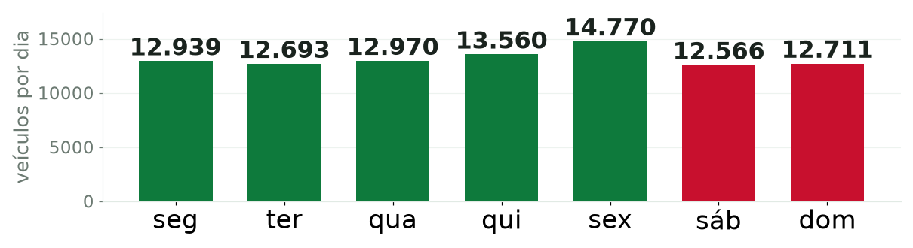

Deep Learning · IFG
Previsão de volume de tráfego
em praças de pedágio
Comparando redes recorrentes: SimpleRNN · GRU · LSTM
Daniel Flavio e Guilherme Martins · Instituto Federal de Goiás · Outubro de 2026
Comparando redes recorrentes: SimpleRNN · GRU · LSTM
Daniel Flavio e Guilherme Martins · Instituto Federal de Goiás · Outubro de 2026
Para cada praça de pedágio, queremos saber quantos veículos vão passar no dia seguinte — usando os dias anteriores.
É prever um número, não uma categoria. Por isso a tarefa é de regressão.

A coluna chamada mes_ano guardava, na verdade, uma data por dia. Tratar como mensal apagaria o efeito do dia da semana.
Só 47 das 345 praças têm o período inteiro. Metade tem menos de um ano — praças novas entraram no meio.
Consequência: um modelo por praça seria inviável. Treinamos um único modelo, com todas as praças.
4 de volume: passeio, comercial, motos e o total.
9 de calendário: dia da semana e época do ano.
Uma janela de N dias entra na rede. A saída é um número: o total de veículos do dia seguinte.
A janela desliza 1 dia por vez — cada passo vira um exemplo de treino.
A previsão mais simples que existe é dizer que amanhã será igual a hoje. Um modelo só tem valor se bater essa régua.
Ou seja: um R² alto aqui não prova nada sozinho. É por isso que a régua existe.
Memória curta e simples. A mais rápida, mas esquece o passado distante.
Portões que decidem o que lembrar e o que descartar. Equilíbrio entre memória e custo.
Memória de longo prazo com três portões. A mais poderosa — e a mais pesada.
Mesmas entradas, mesmos dados, mesma semente. Muda só a célula.
Uma busca testa combinações de parâmetros e mata cedo as que vão mal. A escolha usa apenas a validação.
O erro (RMSE) na validação. O teste fica intocado até o fim — sem exceção.
Ressalva honestaSem GPU, a busca rodou reduzida: 15 tentativas, parte do treino. O modelo final é retreinado com os dados completos.
| Arquitetura | MAE | RMSE | Parâmetros | Treino |
|---|---|---|---|---|
| GRU | 1.537 | 2.702 | 11.233 | 9 min |
| LSTM | 1.550 | 2.747 | 14.743 | 7 min |
| SimpleRNN | 1.566 | 2.725 | 3.727 | 3 min |
Empate técnico. O SimpleRNN chega perto gastando um terço dos parâmetros.
| Janela | RMSE |
|---|---|
| 30 dias | 2.725 |
| 14 dias | 3.020 |
| 7 dias | 3.061 |
| Camadas | MAE |
|---|---|
| 2 | 1.493 |
| 3 | 1.503 |
| 1 | 1.566 |
Janela mais longa ajuda de verdade. E duas camadas batem uma — a terceira não acrescenta.
| Unidades | Parâmetros | MAE | Treino | Por previsão |
|---|---|---|---|---|
| 32 | 1.505 | 1.713 | 1 min | 0,07 ms |
| 64 | 5.057 | 1.598 | 4 min | 0,10 ms |
| 128 | 18.305 | 1.514 | 7 min | 0,12 ms |
Mais unidades melhoram o erro — mas o custo cresce desproporcional: 12× mais parâmetros para ~12% de MAE.
| Modelo | MAE | R² |
|---|---|---|
| Repetir o último dia | 1.536 | 0,92 |
| Média dos últimos dias | 1.831 | 0,88 |
| GRU (final) | 1.126 | 0,95 |
| Modelo | MAE | R² |
|---|---|---|
| Repetir o último dia | 1.774 | 0,92 |
| Média dos últimos dias | 2.028 | 0,89 |
| GRU (final) | 1.469 | 0,94 |
O modelo bate a régua nos dois cenários — e em praças novas a vantagem é menor, como esperado.
As redes recorrentes superaram a régua. A diferença entre as três famílias, porém, é pequena — e isso também é um resultado.
Sem placa de vídeo, a busca foi reduzida. Não fizemos validação cruzada. E só prevemos um dia à frente.
Obrigado! Perguntas?